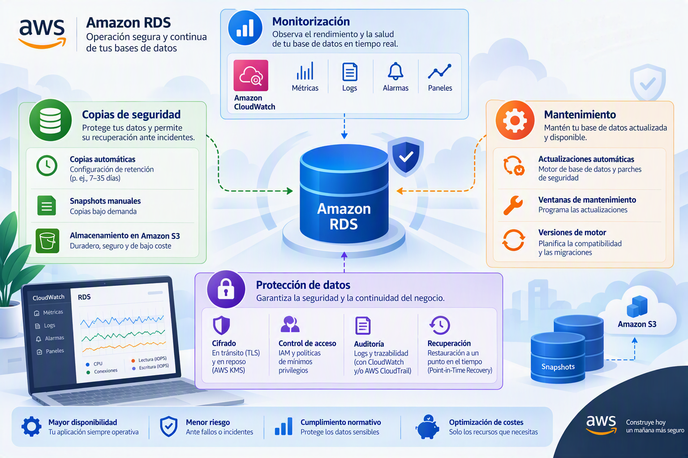

Monitorización, copias de seguridad, mantenimiento y protección de los datos

La creación de una base de datos no finaliza cuando la instancia comienza a funcionar. De hecho, gran parte del trabajo de administración se desarrolla posteriormente, cuando es necesario supervisar el comportamiento del sistema, detectar problemas de rendimiento, aplicar actualizaciones, proteger la información y garantizar que los datos puedan recuperarse en caso de fallo.
En entornos profesionales, una base de datos no debe considerarse únicamente como un repositorio de información, sino como un servicio crítico cuyo funcionamiento debe supervisarse de forma continua. Por este motivo, Amazon RDS incorpora mecanismos de observabilidad, monitorización, auditoría, copia de seguridad y recuperación que permiten administrar el ciclo de vida completo de la plataforma. La monitorización activa, la configuración de mecanismos de recuperación y la protección de la información forman parte de las competencias asociadas a la administración profesional de bases de datos en la nube.
La importancia de la monitorización
Toda base de datos experimenta cambios continuos en su carga de trabajo. El número de usuarios conectados, el volumen de consultas ejecutadas, la utilización de memoria o la actividad de almacenamiento pueden variar significativamente a lo largo del tiempo.
Sin mecanismos adecuados de supervisión resulta imposible determinar si la infraestructura está funcionando correctamente o identificar las causas de una degradación del rendimiento.
La monitorización permite responder a preguntas fundamentales como:
- ¿Está la CPU trabajando al límite de su capacidad?
- ¿Existe falta de memoria disponible?
- ¿Se están produciendo bloqueos en el almacenamiento?
- ¿Las consultas responden dentro de los tiempos esperados?
- ¿Existen tendencias de crecimiento que requieran ampliar recursos?
La respuesta a estas cuestiones es esencial para garantizar la estabilidad y la eficiencia del sistema.
Database Insights
Amazon RDS incorpora funcionalidades avanzadas de observabilidad agrupadas bajo el nombre de Database Insights.
Su objetivo es proporcionar una visión detallada del comportamiento de la base de datos mediante métricas históricas y herramientas de análisis orientadas a la identificación de problemas de rendimiento.
Mientras que las métricas tradicionales muestran el estado general del sistema, Database Insights permite profundizar en las causas concretas que provocan una degradación del servicio.
Esta información facilita enormemente las tareas de diagnóstico y optimización, especialmente en entornos con una elevada complejidad operativa.
Modalidad estándar y modalidad avanzada
Amazon RDS ofrece diferentes niveles de capacidad analítica.
La modalidad estándar proporciona acceso a métricas detalladas sobre el funcionamiento de la base de datos y permite analizar el comportamiento general del sistema durante un periodo determinado.
Por su parte, la modalidad avanzada amplía las capacidades de observación, incorporando información más detallada y periodos de retención más amplios para el análisis histórico.
La elección entre ambas opciones depende de factores como la criticidad del sistema, la necesidad de análisis avanzados y el presupuesto disponible para la operación del servicio.
Retención de métricas
Una de las decisiones asociadas a la monitorización consiste en determinar cuánto tiempo se conservarán los datos históricos.
La retención de métricas permite comparar el comportamiento actual con periodos anteriores y detectar tendencias que podrían pasar desapercibidas en una observación puntual.
Gracias a esta información es posible identificar aumentos progresivos de carga, variaciones estacionales en el uso del sistema o degradaciones graduales del rendimiento.
La conservación de históricos también facilita las tareas de auditoría y la planificación de futuras ampliaciones de infraestructura.
Monitorización mejorada
Además de las métricas estándar proporcionadas por RDS, AWS permite habilitar la denominada monitorización mejorada.
Este servicio proporciona acceso a información más detallada sobre el sistema operativo subyacente que ejecuta la instancia.
Mientras que las métricas convencionales muestran indicadores generales de la base de datos, la monitorización mejorada permite conocer con mayor precisión cómo se están utilizando los recursos físicos asignados.
Entre otros aspectos, ofrece información relacionada con:
- Uso de CPU.
- Consumo de memoria.
- Actividad de los procesos internos.
- Operaciones de entrada y salida.
- Utilización de red.
Esta visibilidad adicional resulta especialmente útil cuando es necesario determinar si un problema de rendimiento tiene su origen en la propia base de datos o en limitaciones de la infraestructura donde se ejecuta.
CloudWatch como plataforma de observabilidad
Las métricas generadas por Amazon RDS pueden integrarse con Amazon CloudWatch, el servicio de monitorización centralizado de AWS.
CloudWatch actúa como una plataforma unificada donde se recopilan, almacenan y representan datos procedentes de múltiples servicios.
Gracias a esta integración es posible construir paneles de supervisión, generar alertas automáticas y correlacionar eventos que afectan simultáneamente a distintas partes de una arquitectura.
En infraestructuras empresariales complejas, esta visión global resulta fundamental para comprender el comportamiento conjunto de aplicaciones, servidores, redes y bases de datos.
La incorporación de recursos de monitorización y observabilidad constituye una práctica habitual dentro de la administración moderna de infraestructuras cloud.---
Exportación de registros
Además de las métricas numéricas, una fuente esencial de información para el administrador son los registros o logs.
Los registros almacenan eventos generados durante el funcionamiento normal de la base de datos y permiten reconstruir lo ocurrido cuando se produce una incidencia.
La integración con CloudWatch posibilita centralizar estos registros y analizarlos mediante herramientas específicas de búsqueda y visualización.
Registro de errores
El registro de errores contiene información sobre problemas detectados por el motor MariaDB durante su funcionamiento.
Cuando una base de datos experimenta fallos inesperados, errores de configuración o incidencias internas, este registro suele constituir el primer punto de análisis para el administrador.
Registro general
El registro general almacena información sobre las operaciones realizadas por los clientes que interactúan con la base de datos.
Aunque proporciona una visión muy completa de la actividad del sistema, también puede generar una cantidad considerable de información, por lo que su utilización debe evaluarse en función de las necesidades concretas de cada entorno.
Registro de auditoría
El registro de auditoría permite mantener trazabilidad sobre las acciones realizadas dentro de la plataforma.
Este tipo de información resulta especialmente relevante en organizaciones sujetas a requisitos normativos o políticas de control de accesos que exigen conocer quién realizó una determinada operación y en qué momento se produjo.
Registro de consultas lentas
Uno de los registros más valiosos desde el punto de vista del rendimiento es el registro de consultas lentas.
Su finalidad consiste en identificar aquellas consultas SQL cuya ejecución supera determinados umbrales de tiempo.
Analizando estas consultas es posible detectar problemas de diseño, índices inadecuados o patrones de acceso ineficientes que afectan negativamente al rendimiento global del sistema.
La optimización basada en el análisis de consultas lentas constituye una de las técnicas más habituales de mejora del rendimiento en bases de datos relacionales.
Copias de seguridad automáticas
La protección de la información es uno de los pilares fundamentales de cualquier sistema de bases de datos.
Amazon RDS incorpora mecanismos de copia de seguridad automática que permiten recuperar la información ante errores humanos, fallos de infraestructura o incidencias operativas.
Estas copias se generan automáticamente sin necesidad de intervención manual y constituyen la base de las estrategias de recuperación ante desastres.
La configuración de políticas de copia de seguridad y recuperación forma parte de las tareas esenciales asociadas a la administración de bases de datos en la nube.
Periodo de retención
Uno de los parámetros fundamentales de las copias de seguridad es el periodo de retención.
La retención determina durante cuánto tiempo se conservarán las copias generadas automáticamente antes de ser eliminadas.
Un periodo de retención amplio proporciona una mayor capacidad de recuperación frente a errores detectados tardíamente, aunque también incrementa el volumen de almacenamiento utilizado.
Por el contrario, una retención reducida minimiza costes, pero limita la capacidad de restaurar información histórica.
La elección adecuada dependerá de las políticas de recuperación y continuidad definidas por la organización.
Ventana de copia de seguridad
Amazon RDS también permite definir la ventana temporal durante la cual se ejecutarán las copias automáticas.
La programación de estas operaciones suele realizarse durante periodos de baja actividad para minimizar cualquier posible impacto sobre las aplicaciones.
Cuando no se especifica una ventana concreta, AWS selecciona automáticamente el momento que considera más adecuado para ejecutar estas tareas.
Replicación de copias entre regiones
Para escenarios donde la protección de la información resulta especialmente crítica, Amazon RDS permite replicar copias de seguridad en regiones diferentes.
Esta estrategia proporciona protección adicional frente a incidentes que puedan afectar a una región completa de AWS.
La replicación geográfica incrementa la resiliencia del sistema, aunque también añade costes adicionales asociados al almacenamiento y a la transferencia de datos.
Su utilización suele reservarse para sistemas que requieren elevados niveles de continuidad operativa y recuperación ante desastres.
Actualizaciones y mantenimiento
Toda base de datos requiere tareas periódicas de mantenimiento destinadas a corregir errores, mejorar la estabilidad y solucionar vulnerabilidades de seguridad.
Amazon RDS automatiza gran parte de estas tareas, simplificando considerablemente la administración cotidiana del servicio.
Actualizaciones automáticas de versiones secundarias
AWS permite habilitar la instalación automática de actualizaciones menores del motor MariaDB.
Estas actualizaciones suelen incorporar correcciones de errores, mejoras de estabilidad y parches de seguridad sin introducir cambios importantes en la funcionalidad de la plataforma.
Mantener activadas las actualizaciones automáticas reduce la exposición a vulnerabilidades conocidas y simplifica la gestión operacional.
No obstante, algunas organizaciones prefieren validar previamente los cambios en entornos de prueba antes de permitir su despliegue en sistemas de producción.
Ventanas de mantenimiento
Las operaciones programadas de mantenimiento pueden realizarse dentro de franjas horarias definidas por el administrador.
La utilización de ventanas de mantenimiento permite planificar posibles intervenciones en horarios que minimicen el impacto sobre los usuarios.
Este enfoque resulta especialmente importante en sistemas utilizados de forma continua o con elevados requisitos de disponibilidad.
Protección contra eliminación accidental
Una de las características más sencillas y, al mismo tiempo, más valiosas de Amazon RDS es la protección contra eliminación.
Cuando esta función se encuentra habilitada, la instancia no puede ser eliminada accidentalmente desde la consola de administración.
Antes de proceder a su eliminación, el administrador deberá desactivar explícitamente esta protección.
Aunque se trata de una medida aparentemente simple, evita numerosos errores operativos y proporciona una capa adicional de seguridad administrativa.
Configuración inicial de la base de datos
Amazon RDS permite crear una base de datos inicial durante el despliegue de la instancia.
Esta funcionalidad facilita la automatización de entornos y simplifica la puesta en marcha de aplicaciones que requieren una estructura básica preparada desde el principio.
No obstante, también es posible crear únicamente la instancia y generar posteriormente las distintas bases de datos según las necesidades del proyecto.
Grupos de parámetros
Los grupos de parámetros constituyen uno de los mecanismos más importantes de personalización de una instancia RDS.
Un grupo de parámetros contiene la configuración interna utilizada por MariaDB para controlar aspectos relacionados con memoria, cachés, conexiones, tiempos de espera y numerosos elementos del comportamiento del motor.
AWS proporciona configuraciones predeterminadas adecuadas para la mayoría de escenarios, aunque las organizaciones con necesidades específicas pueden crear grupos personalizados adaptados a sus cargas de trabajo.
La modificación de estos parámetros permite realizar optimizaciones orientadas tanto al rendimiento como al consumo de recursos, una capacidad contemplada dentro de las tareas de administración y optimización de bases de datos.
Grupos de opciones
Además de los parámetros generales del motor, Amazon RDS incorpora grupos de opciones destinados a habilitar funcionalidades adicionales.
Estas opciones permiten extender determinadas capacidades del sistema sin necesidad de modificar manualmente la instalación de MariaDB.
Su disponibilidad depende del motor y de la versión utilizada, así como de las características soportadas por AWS en cada momento.
Cifrado de la base de datos
La protección de la información almacenada constituye otro aspecto fundamental de cualquier despliegue profesional.
Amazon RDS permite cifrar los datos almacenados mediante claves gestionadas a través de AWS Key Management Service (KMS).
El cifrado protege la información almacenada frente a accesos no autorizados y contribuye al cumplimiento de requisitos normativos relacionados con la protección de datos.
La configuración de mecanismos de cifrado constituye una de las actividades fundamentales contempladas dentro de la administración segura de bases de datos en la nube.
Conclusiones
La fase de monitorización, protección y mantenimiento representa la última etapa del despliegue inicial de una instancia MariaDB en Amazon RDS, pero marca el comienzo de su ciclo de vida operativo.
Las decisiones relacionadas con observabilidad, copias de seguridad, actualización de software, retención de información, recuperación ante desastres y cifrado tienen una influencia directa sobre la disponibilidad, la seguridad y la capacidad de gestión del sistema. Una infraestructura correctamente diseñada no es únicamente aquella que funciona hoy, sino aquella que puede supervisarse, mantenerse y recuperarse eficazmente cuando se produzca una incidencia.